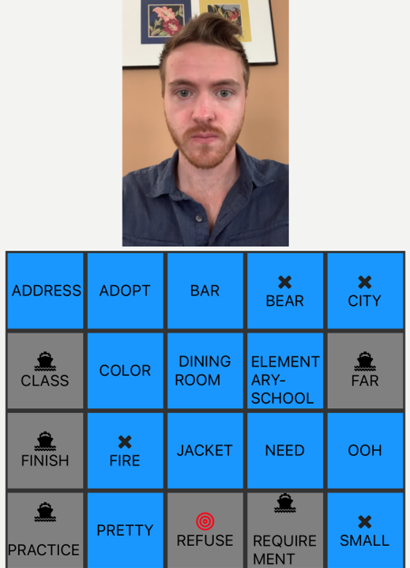

ABOUT ME
I am a Senior Researcher at Microsoft Research New England.
My research focuses on developing systems that expand acces to information, in particular for people with disabilities. My work is interdisciplinary, combining Human-Computer Interaction, Applied Machine Learning, and Accessibility. I completed my PhD in Computer Science at the University of Washington advised by Richard Ladner, and hold an AB in Applied Mathematics from Harvard. My work has been featured in the Microsoft Research Podcast and in The Economist.
EXPERIENCE
| Current | Senior Researcher, Microsoft Research |
|---|---|
| 2018-2020 | Postdoc, Microsoft Research |
| 2013-2018 | PhD Student, University of Washington |
| 2015, 2016 | Intern, Microsoft Research |
| 2014 | Intern, Microsoft Bing |
| 2011-2012 | PhD Student, Princeton |
| 2010-2011 | Research Assistant, George Washington University |
| 2010 | AB, Applied Mathematics, cum laude, Harvard |
For more details, please see my CV.
RESEARCH
I build systems that improve access to information by leveraging modern computing capabilities in innovative ways. My work combines human-computer interaction (HCI) with applied machine learning, in collaboration with interdisciplinary colleagues from computer vision, machine learning, graphics, linguistics, typography, and the social sciences. My work employs both quantitative and qualitative methods, using data collected through crowdsourcing platforms to iterate on designs, explore solution spaces, and solve data scarcity problems. I partner with target users to incorporate input and build community trust, and am committed to publicly releasing projects so those users can benefit.

More: recorded demo, presentation, paper below
ASL SEA BATTLE -
Lack of data is the biggest barrier to developing intelligent sign language systems. To collect larger, more representative AI datasets, we propose a sign language game. Our game is a variant of the traditional battleships game. In our ASL version, grid squares are labelled with signs, and players guess by recording a sign, thereby contributing to the dataset. The opponent views the video and taps the matching square to reveal a response, thereby providing a label. The game also provides a fun and educational sign language resource.
SIGN LANGUAGE ML PRIVACY -
Sign language data is intrinsically personal -- typically consisting of videos of people signing, which capture the face, body, and surroundings. We propose applying filters to these videos to help address privacy concerns, boost dataset participation, and thereby potentially boost ML model performance as well. We experimented with various filters applied to the signer and surroundings, and ran both user studies and computer vision experiments to validate this idea.
CHAT IN THE HAT -
Virtual remote interpreting (VRI) makes sign language interpretations available through a video call. VRI requires the signer to hold a smartphone (constraining signing and multitasking), or to place the video call device in a fixed location (constraining mobility). We prototyped a wearable device to free the signer's hands and enable mobility while using VRI. The device consists of a baseball hat with a speaker/mic (English input/output), mounted fisheye camera (ASL input), and smart glasses displaying the interpreter (ASL output).
SMARTFONTS -
By redesigning English letterforms, smartfonts and livefonts challenge our assumption that we should read traditional letterforms on modern screens. Personal devices enable this challenge, by allowing users to adopt new letterforms without language reform or mass adoption. While smartfonts leverage color, shape, and spacing, livefonts add animation to the design space. Potential benefits include increased legibility, privacy, aesthetics, and fun. Try it out by downloading a smartfont and uploading it to Chrome's Font Changer extension, to render all your web content in a smartfont!
ANIMATED SI5S -
While ASL character/writing systems offer many potential benefits, none have been widely adopted. Time and effort to learn them is one obstacle to adoption. All past ASL scripts have been stationary (non-animated), which makes depicting movement difficult. We capitalize on modern animation capabilities, proposing the first animated ASL character system prototype. By representing movement iconically, our system reduces the need to memorize symbolic representations of complex movements.
ASL-SEARCH -
ASL-Search is an ASL dictionary that lets students look up the English meanings of signs. Looking up the meaning of a sign is difficult because a sign is a 3D movement not easily described with written words. Our dictionary lets users enter a set of features including hand shape, location, and movement, to describe a sign and look it up. The dictionary learns from the features that previous users enter to improve results for future users.
ASL-FLASH -
ASL-Flash is a site that both helps people learn American Sign Language and provides featural descriptions of signs. The site provides "flashcards" of signs, showing visitors videos of signs and quizzing them on the English meanings and compositional features (e.g., handshape and hand location). The data that users provide helps us build the ASL-Search dictionary. Check it out at www.aslflash.org and learn some signs!